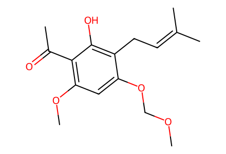
COCOc1cc(OC)c(C(C)=O)c(O)c1CC=C(C)C29 molecular records, 26 preparation/control events, 4 paths. Successful racemic and both enantioenriched target sequences from known compound 6; includes the unprotected Shi control. Literature preparation of 6 (six steps) and optimization screening entries are outside the executable network. Full article coverage means its successful displayed network, not a commercial-start total synthesis. Canonical isomeric SMILES; independent chemical review pending.
完整 JSON · 逐步 CSV · 路线序列 · SDF · HRMS 核对
| 事件 | 分子连接 | 报告产率 | Canonical reaction SMILES |
|---|---|---|---|
| F01 | 6 → 7 | 7: 92% | COCOc1cc(OC)c(C(C)=O)c(O)c1CC=C(C)C>>COCOc1cc(OC)c(C(C)=O)c(O[Si](C)(C)C(C)(C)C)c1CC=C(C)C |
| F02 | 7 → 8a | 8a: 90% | COCOc1cc(OC)c(C(C)=O)c(O[Si](C)(C)C(C)(C)C)c1CC=C(C)C>>COCOc1cc(OC)c(C(C)=O)c(O[Si](C)(C)C(C)(C)C)c1C[C@@H]1OC1(C)C |
| F03 | 7 → 8b | 8b: 89% | COCOc1cc(OC)c(C(C)=O)c(O[Si](C)(C)C(C)(C)C)c1CC=C(C)C>>COCOc1cc(OC)c(C(C)=O)c(O[Si](C)(C)C(C)(C)C)c1C[C@H]1OC1(C)C |
| F04 | 6 → 5 | 5: 81% | COCOc1cc(OC)c(C(C)=O)c(O)c1CC=C(C)C>>COCOc1cc(OC)c(C(C)=O)c(O)c1CC1OC1(C)C |
| F05 | 5 → 9 | 9: 90% | COCOc1cc(OC)c(C(C)=O)c(O)c1CC1OC1(C)C>>COCOc1cc(OC)c(C(C)=O)c2c1CC(C(C)(C)O)O2 |
| F06 | 6 → 5a | 5a: 17% | COCOc1cc(OC)c(C(C)=O)c(O)c1CC=C(C)C>>COCOc1cc(OC)c(C(C)=O)c(O)c1C[C@@H]1OC1(C)C |
| F07 | 8a → 9a | 9a: 90% | COCOc1cc(OC)c(C(C)=O)c(O[Si](C)(C)C(C)(C)C)c1C[C@@H]1OC1(C)C>>COCOc1cc(OC)c(C(C)=O)c2c1C[C@H](C(C)(C)O)O2 |
| F08 | 8b → 9b | 9b: 91% | COCOc1cc(OC)c(C(C)=O)c(O[Si](C)(C)C(C)(C)C)c1C[C@H]1OC1(C)C>>COCOc1cc(OC)c(C(C)=O)c2c1C[C@@H](C(C)(C)O)O2 |
| F09 | 9 → 4 | 4: 92% | COCOc1cc(OC)c(C(C)=O)c2c1CC(C(C)(C)O)O2>>COc1cc(O)c2c(c1C(C)=O)OC(C(C)(C)O)C2 |
| F10 | 4 + propargyl-chloride → 10 | 10: 79% | C#CC(C)(C)Cl.COc1cc(O)c2c(c1C(C)=O)OC(C(C)(C)O)C2>>C#CC(C)(C)Oc1cc(OC)c(C(C)=O)c2c1CC(C(C)(C)O)O2 |
| F11 | 10 → 11 | 11: 55% | C#CC(C)(C)Oc1cc(OC)c(C(C)=O)c2c1CC(C(C)(C)O)O2>>COc1c2c(c3c(c1C(C)=O)OC(C(C)(C)O)C3)OC(C)(C)C=C2 |
| F12 | 11 → 3 | 3: 78% | COc1c2c(c3c(c1C(C)=O)OC(C(C)(C)O)C3)OC(C)(C)C=C2>>CC(=O)c1c(O)c2c(c3c1OC(C(C)(C)O)C3)OC(C)(C)C=C2 |
| F13 | 3 + 2 → 12 | 12: 81% | CC(=O)c1c(O)c2c(c3c1OC(C(C)(C)O)C3)OC(C)(C)C=C2.COc1ccc(C=O)cc1>>COc1ccc(/C=C/C(=O)c2c(O)c3c(c4c2OC(C(C)(C)O)C4)OC(C)(C)C=C3)cc1 |
| F14 | 12 → 1 | 1: 88% | COc1ccc(/C=C/C(=O)c2c(O)c3c(c4c2OC(C(C)(C)O)C4)OC(C)(C)C=C3)cc1>>COc1ccc(CCC(=O)c2c(O)c3c(c4c2OC(C(C)(C)O)C4)OC(C)(C)C=C3)cc1 |
| F15 | 9a → 4a | 4a: 95% | COCOc1cc(OC)c(C(C)=O)c2c1C[C@H](C(C)(C)O)O2>>COc1cc(O)c2c(c1C(C)=O)O[C@@H](C(C)(C)O)C2 |
| F16 | 4a + propargyl-chloride → 10a | 10a: 78% | C#CC(C)(C)Cl.COc1cc(O)c2c(c1C(C)=O)O[C@@H](C(C)(C)O)C2>>C#CC(C)(C)Oc1cc(OC)c(C(C)=O)c2c1C[C@H](C(C)(C)O)O2 |
| F17 | 10a → 11a | 11a: 53% | C#CC(C)(C)Oc1cc(OC)c(C(C)=O)c2c1C[C@H](C(C)(C)O)O2>>COc1c2c(c3c(c1C(C)=O)O[C@@H](C(C)(C)O)C3)OC(C)(C)C=C2 |
| F18 | 11a → 3a | 3a: 76% | COc1c2c(c3c(c1C(C)=O)O[C@@H](C(C)(C)O)C3)OC(C)(C)C=C2>>CC(=O)c1c(O)c2c(c3c1O[C@@H](C(C)(C)O)C3)OC(C)(C)C=C2 |
| F19 | 3a + 2 → 12a | 12a: 80% | CC(=O)c1c(O)c2c(c3c1O[C@@H](C(C)(C)O)C3)OC(C)(C)C=C2.COc1ccc(C=O)cc1>>COc1ccc(/C=C/C(=O)c2c(O)c3c(c4c2O[C@@H](C(C)(C)O)C4)OC(C)(C)C=C3)cc1 |
| F20 | 12a → 1a | 1a: 90% | COc1ccc(/C=C/C(=O)c2c(O)c3c(c4c2O[C@@H](C(C)(C)O)C4)OC(C)(C)C=C3)cc1>>COc1ccc(CCC(=O)c2c(O)c3c(c4c2O[C@@H](C(C)(C)O)C4)OC(C)(C)C=C3)cc1 |
| F21 | 9b → 4b | 4b: 93% | COCOc1cc(OC)c(C(C)=O)c2c1C[C@@H](C(C)(C)O)O2>>COc1cc(O)c2c(c1C(C)=O)O[C@H](C(C)(C)O)C2 |
| F22 | 4b + propargyl-chloride → 10b | 10b: 76% | C#CC(C)(C)Cl.COc1cc(O)c2c(c1C(C)=O)O[C@H](C(C)(C)O)C2>>C#CC(C)(C)Oc1cc(OC)c(C(C)=O)c2c1C[C@@H](C(C)(C)O)O2 |
| F23 | 10b → 11b | 11b: 57% | C#CC(C)(C)Oc1cc(OC)c(C(C)=O)c2c1C[C@@H](C(C)(C)O)O2>>COc1c2c(c3c(c1C(C)=O)O[C@H](C(C)(C)O)C3)OC(C)(C)C=C2 |
| F24 | 11b → 3b | 3b: 77% | COc1c2c(c3c(c1C(C)=O)O[C@H](C(C)(C)O)C3)OC(C)(C)C=C2>>CC(=O)c1c(O)c2c(c3c1O[C@H](C(C)(C)O)C3)OC(C)(C)C=C2 |
| F25 | 3b + 2 → 12b | 12b: 82% | CC(=O)c1c(O)c2c(c3c1O[C@H](C(C)(C)O)C3)OC(C)(C)C=C2.COc1ccc(C=O)cc1>>COc1ccc(/C=C/C(=O)c2c(O)c3c(c4c2O[C@H](C(C)(C)O)C4)OC(C)(C)C=C3)cc1 |
| F26 | 12b → 1b | 1b: 91% | COc1ccc(/C=C/C(=O)c2c(O)c3c(c4c2O[C@H](C(C)(C)O)C4)OC(C)(C)C=C3)cc1>>COc1ccc(CCC(=O)c2c(O)c3c(c4c2O[C@H](C(C)(C)O)C4)OC(C)(C)C=C3)cc1 |

COCOc1cc(OC)c(C(C)=O)c(O)c1CC=C(C)C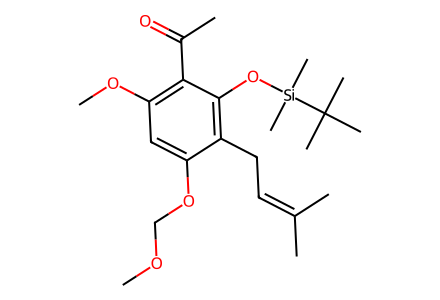
COCOc1cc(OC)c(C(C)=O)c(O[Si](C)(C)C(C)(C)C)c1CC=C(C)C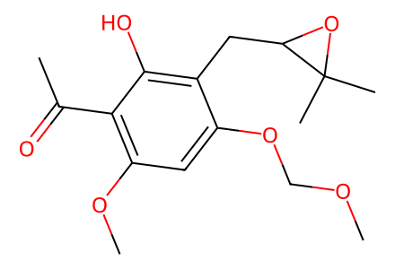
COCOc1cc(OC)c(C(C)=O)c(O)c1CC1OC1(C)C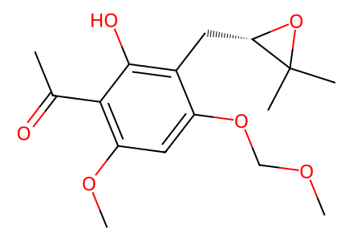
COCOc1cc(OC)c(C(C)=O)c(O)c1C[C@@H]1OC1(C)C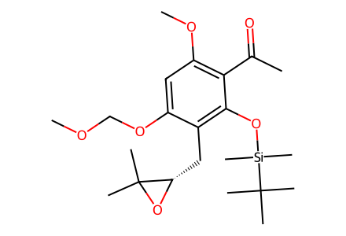
COCOc1cc(OC)c(C(C)=O)c(O[Si](C)(C)C(C)(C)C)c1C[C@@H]1OC1(C)C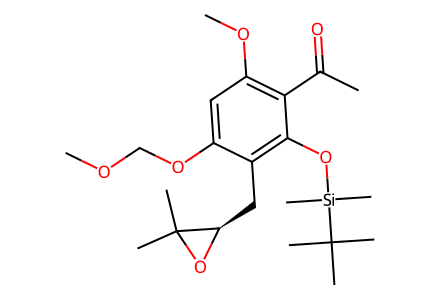
COCOc1cc(OC)c(C(C)=O)c(O[Si](C)(C)C(C)(C)C)c1C[C@H]1OC1(C)C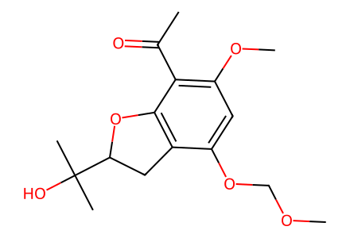
COCOc1cc(OC)c(C(C)=O)c2c1CC(C(C)(C)O)O2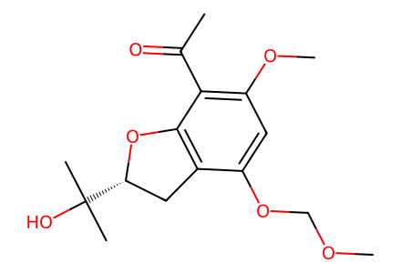
COCOc1cc(OC)c(C(C)=O)c2c1C[C@H](C(C)(C)O)O2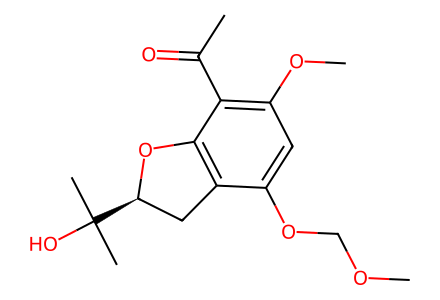
COCOc1cc(OC)c(C(C)=O)c2c1C[C@@H](C(C)(C)O)O2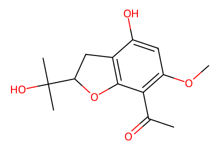
COc1cc(O)c2c(c1C(C)=O)OC(C(C)(C)O)C2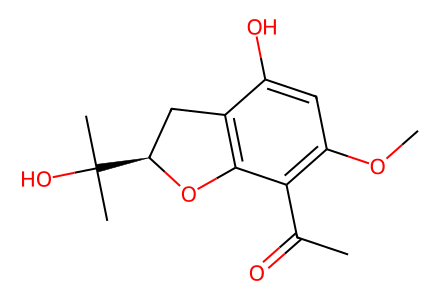
COc1cc(O)c2c(c1C(C)=O)O[C@@H](C(C)(C)O)C2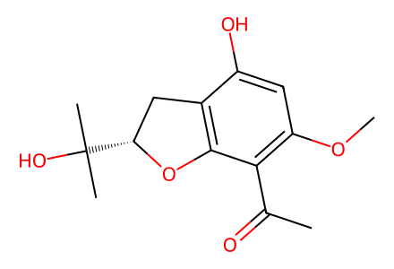
COc1cc(O)c2c(c1C(C)=O)O[C@H](C(C)(C)O)C2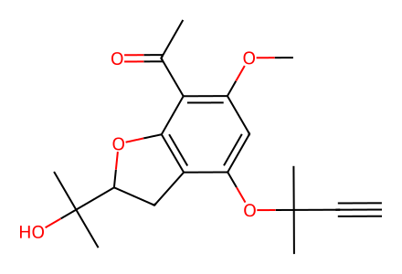
C#CC(C)(C)Oc1cc(OC)c(C(C)=O)c2c1CC(C(C)(C)O)O2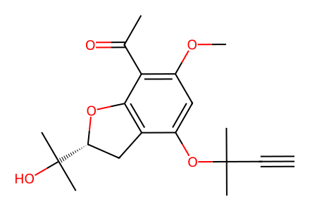
C#CC(C)(C)Oc1cc(OC)c(C(C)=O)c2c1C[C@H](C(C)(C)O)O2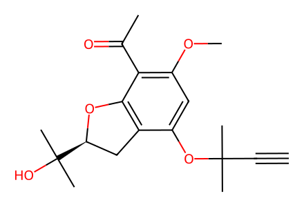
C#CC(C)(C)Oc1cc(OC)c(C(C)=O)c2c1C[C@@H](C(C)(C)O)O2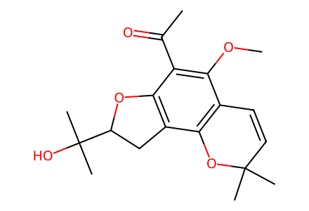
COc1c2c(c3c(c1C(C)=O)OC(C(C)(C)O)C3)OC(C)(C)C=C2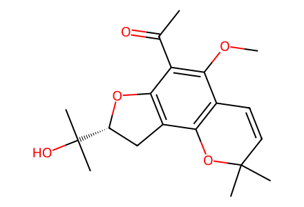
COc1c2c(c3c(c1C(C)=O)O[C@@H](C(C)(C)O)C3)OC(C)(C)C=C2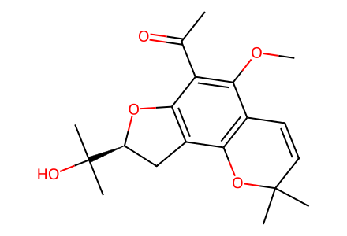
COc1c2c(c3c(c1C(C)=O)O[C@H](C(C)(C)O)C3)OC(C)(C)C=C2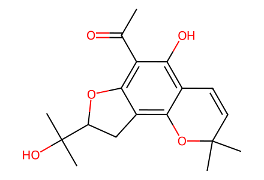
CC(=O)c1c(O)c2c(c3c1OC(C(C)(C)O)C3)OC(C)(C)C=C2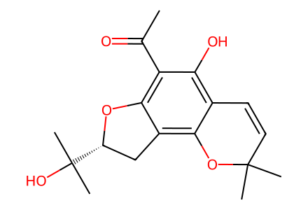
CC(=O)c1c(O)c2c(c3c1O[C@@H](C(C)(C)O)C3)OC(C)(C)C=C2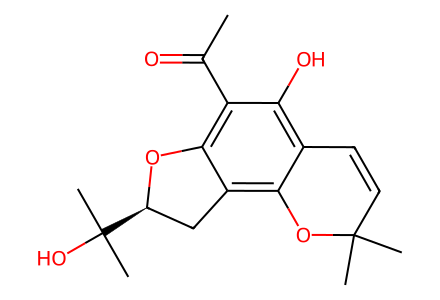
CC(=O)c1c(O)c2c(c3c1O[C@H](C(C)(C)O)C3)OC(C)(C)C=C2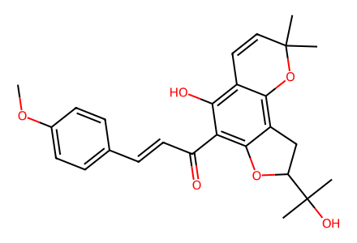
COc1ccc(/C=C/C(=O)c2c(O)c3c(c4c2OC(C(C)(C)O)C4)OC(C)(C)C=C3)cc1COc1ccc(/C=C/C(=O)c2c(O)c3c(c4c2O[C@@H](C(C)(C)O)C4)OC(C)(C)C=C3)cc1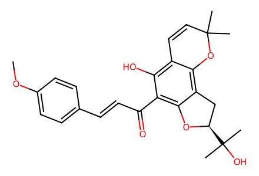
COc1ccc(/C=C/C(=O)c2c(O)c3c(c4c2O[C@H](C(C)(C)O)C4)OC(C)(C)C=C3)cc1COc1ccc(CCC(=O)c2c(O)c3c(c4c2OC(C(C)(C)O)C4)OC(C)(C)C=C3)cc1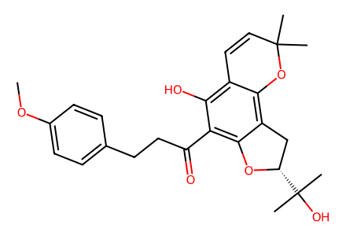
COc1ccc(CCC(=O)c2c(O)c3c(c4c2O[C@@H](C(C)(C)O)C4)OC(C)(C)C=C3)cc1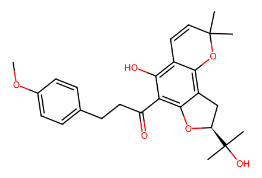
COc1ccc(CCC(=O)c2c(O)c3c(c4c2O[C@H](C(C)(C)O)C4)OC(C)(C)C=C3)cc1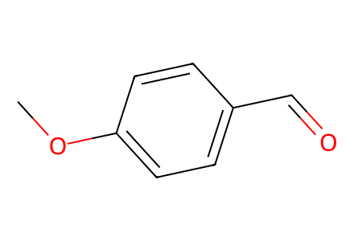
COc1ccc(C=O)cc1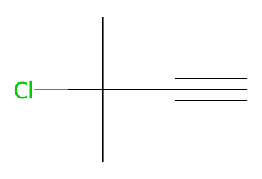
C#CC(C)(C)Cl